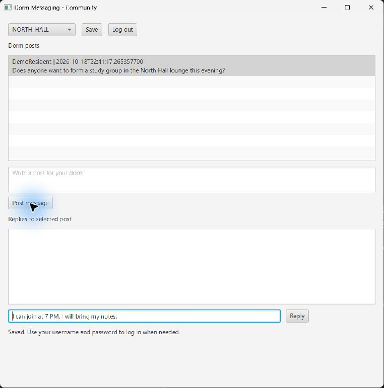

- Log in and select a dorm.
- Click the post you want to reply to in Dorm posts.
- Enter your reply in Write a reply.
- Click Reply.
- Your reply appears under Replies to selected post, and the reply field clears.


Select a post first. Blank replies are rejected. The app attempts to save after submitting a reply; check the status area for a save error.